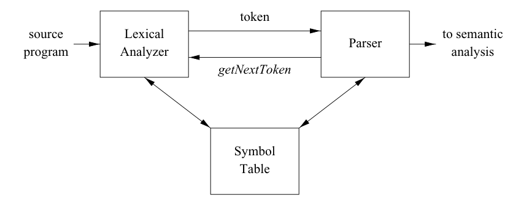

Part 4
Warning: this will be the most substantial part.
Our isam.exe will be the concrete ISAM reader, supporting single / range selection of Records. We will need to take care of the following problems:
- index file loading and search support on it
- database file loading and single / multi Records retrieval (through a "cache-paging system")
- a decent user interface able to understand simple queries
Let's start with the latter...
Parser class
We need something able to understand queries like
SELECT [id]
SELECT [range]
where [range] is something like [start-id] — [end-id].
Not a big deal. Maybe calling it a "parser" is a bit too much. Anyway, it will be an ultra minimalist parser. In fact, the grammar is quite simple
statement → SELECT [expression]
expression → [id]
[id] - [id]
id → POSITIVE INTEGER
This style of syntax analysis is called recursive descent1. statement, expression and id are called grammar production: for each one, there is a function. Usually, there is a Lexer, a Parser and a Symbol Table. But our grammar is really simple so we don't need the last one. From the famous Dragon Book (§3.1)...

Based on the grammar and the model above, let's start defining a Token class in token.h
enum class Token_type {
SELECT, RANGE_OPERATOR, POSITIVE_INTEGER,
end //end of input
};
struct Token {
Token_type type;
std::string value;
};
The next step is the Lexer (sometime called Scanner) in lexer.h
class Lexer {
std::stringstream input;
Token current_token;
public:
Lexer(const std::string& in): input(in), current_token{Token_type::end} { };
Token get(); //consume the next token from the origin and return it
const Token& current() const { return current_token; }; //only returns the current token
};
The meaning of the Lexer class is to hide the origin (in this case, the std::cin standard input), showing to the Parser a sequence of Token and no more. So the Lexer had to recognize a sequence of character and transform it in a Token sequence. This is archieved with the get() function implemented in lexer.cpp: it should be easy to understand.
Now it's Parser's turn. It is a Statement class that gets Tokens from the Lexer and builds an internal representation for the subsequent action
class Statement {
enum Type {
SELECT_SINGLE, SELECT_RANGE
};
Type statement_type;
int start_id;
int end_id;
Lexer lexer;
public:
Statement(const std::string&);
void expression();
int id();
std::vector<Record> execute(Database& database);
};
If you take a look at statement.cpp, you will notice that the mothods expression() and id() match the grammar productions and they are only called inside the Statement() constructor. This is also an attempt to follow the RAII rule: if a problem occur parsing the user input, the constructor fails and there is no risk of creating a partially initialized object.
Said that, we can start thinking about the main() function with the REPL loop2 (a classic).
int main(int argc, char const *argv[])
{
std::string input; //sql statement from standard input
bool exit{false};
// Database database{INDEX_FILENAME, DATABASE_FILENAME};
//REPL
while(!exit) {
std::cout << "isam > ";
std::getline(std::cin, input, '\n');
if(input == ".exit" || std::cin.eof()) {
exit = true;
}
else {
Statement statement{input};
// std::vector<Record> res = statement.execute(database);
// if(res.size()) {
// for(auto& e: res) { //showing results
// std::cout << e;
// }
// }
// else {
// std::cout << "Found 0 records\n";
// }
// }
}
return EXIT_SUCCESS;
}
Some sections are commented because it's too early to talk about them.
Next we will talk about the commented sections.
Index class
This is preparatory to the Database class. We need a guy that help us to
- load index records from the index file to memory
- let us search for a key and get the page number
Not so hard. So this is the interface and representation of Index class
class Index {
index_entry_t* index;
int index_size;
public:
Index(const std::string&);
~Index() { if(index) delete[] index; };
int search(const unsigned int);
int search_reverse(const unsigned int);
//Suppressed
Index(const Index&) = delete;
Index(const Index&&) = delete;
Index& operator=(const Index&) = delete;
Index& operator=(Index&&) = delete;
};
First of all, we suppress some implicit-defined member functions because they would be incorrect . We should have redefined them but, actually, we don't need this.
The constructor simply loads index records from file
The search() function finds the page number of first Record which key is bigger or equal to the argument.
The search_reverse() is similar but it is used for range selection when searching for end-id.
Pager class
This is an attempt of introducing some sort of optimization through caching. When retrieving a Record, the entire page within which it resides is loaded in memory and stored until the end of program. In this way, if Records of the same page will be loaded much faster.
The most important function is get_page():
if(num_page >= this->pages_size) {
return nullptr;
}
checks if the argument is correct.
if(pages[num_page]) {
return pages[num_page];
}
returns the page if it is already in memory.
file.seekg(PAGE_SIZE*num_page);
set the file input position at the start of selected page.
pages[num_page] = new Page{num_page, records_to_fetch};
file.read( reinterpret_cast<char*>(pages[num_page]->records), sizeof(Record)*records_to_fetch);
allocate the page and read it from database file.
Page class
It represents a single page. Attributes are
struct Page {
Record* records; //Pointer to records array
const int size; //Records array size
const int page_pos; //Position of page in file
(...)
Cursor class
This class is like a file pointer position. It allows to easily navigate through the database. It's like a very basic iterator of a Record. Let's see the representation. Default contructor makes a non valid cursor.
class Cursor {
Pager* pager; //a pointer to Page object
const Page* page; //pointer to page of the Record
public:
const Record* record; //pointer to the Record
unsigned int page_pos; //page position of the Record on file
unsigned int array_pos; //Record position on Page class
(...)
First, a cursor is not valid when Cursor::record == nullptr. Then
Cursor::operator bool() const {
return (record) ? true : false;
}
Also, we need some comparison function
bool Cursor::operator==(const Cursor& other) const {
return (this->page_pos == other.page_pos && this->array_pos == other.array_pos) ? true : false;
}
bool Cursor::operator!=(const Cursor& other) const {
return !this->operator==(other);
}
At this point, we can define a prefix increment operator Cursor& Cursor::operator++(). If we move forward the cursor, it refers to the next record of the database. What if the current record was the last from the page?
if(++array_pos == page->size) { //last record of page
page_pos += 1;
array_pos = 0;
}
then we move to the first record (position zero) of the next page. And what if the page was the last?
if(page_pos == page->size) { //se era l'ultima pagina
this->record = nullptr; //invalido il cursore
return *this;
}
it means that page_pos now is equal to Page::page_size so we reached the end (invalid cursor).
Last, we need to computer the difference between two Cursor in terms of Records. So we create int Cursor::diff(const Cursor& other).
Database class
The database class use the Index, Pager and Cursor classes to finalize a simplified database behaviour. Interface consist of two methods: one for single search and another for range selections.
Single search
The function
Cursor Database::search(const int key)
search for the record which the column named id is equal to the parameter key. First
int page_num = this->index.search(key);
if(page_num == -1) {
return Cursor{};
}
const Page* page = this->pager.get_page(page_num);
try to locate the page that might contain the key. Then loads the page from file.
int i{0};
while(i < pager.records_per_page && page->records[i].id != key) {
i += 1;
}
if(i == pager.records_per_page) { //not found
return Cursor{};
}
else {
return Cursor{&pager, page, &(page->records[i]), i, page_num};
}
try to locate the record inside the page. If it does not exists, the function returns a invalid Cursor.
Range selections
The function
std::pair<Cursor,Cursor> Database::search(const int start_key, const int end_key)
search for all records which id is included in the range [start_key, end_key]. It returns a couple of Cursor referring to the first and the last element found. It's more complicated. A step at a time...
const auto not_found = std::pair<Cursor,Cursor>{ Cursor{}, Cursor{} };
this is a shortcut to the value not found used inside this function.
int start_page_pos = this->index.search(start_key);
if(start_page_pos == -1) {
return not_found;
}
const Page* start_page_ptr = this->pager.get_page(start_page_pos);
Like before, try to locate the page that might contain the key and loads the page from file. But this time is different because the page could contain elements less than start_key. In this case we had to go to the next page
int start_i = start_page_ptr->search_greater_equal(start_key);
if(start_i == -1) {
start_page_pos += 1;
start_page_ptr = this->pager.get_page(start_page_pos);
start_i = start_page_ptr->search_greater_equal(start_key);
}
The second part search for a key less or equal to end_key and is similar to the first one.
Finally
return std::pair{
Cursor{&pager, start_page_ptr, &(start_page_ptr->records[start_i]), start_page_pos, start_i},
Cursor{&pager, end_page_ptr, &(end_page_ptr->records[end_i]), end_page_pos, end_i}
};
returns a range of records.
Back to the Statement class
Last step is to implement std::vector<Record> Statement::execute(Database& database). We store the result in a std::vector class: if no records are found, then we get an empty vector.
First
if(statement_type == Type::SELECT_SINGLE) {
Cursor res = database.search(start_id);
return (res) ? std::vector{*res.record} : std::vector<Record>(0);
}
quite easy. For range selections instead
auto range = database.search(start_id, end_id);
if(!range.first) { //se non trovato
return std::vector<Record>(0);
}
no criptic expressions untile here. Next, if there are some results
std::vector<Record> results(range.first.diff(range.second) + 1);
then constructs a vector with the number of records found
int i{0};
while(range.first != range.second) {
results[i++] = *range.first.record;
++range.first;
}
results[i] = *range.first.record;
return results;
then put each record inside the vector.
-
Bjarne Stroustrup. The C++ Programming Language. §10.2.1 ↩